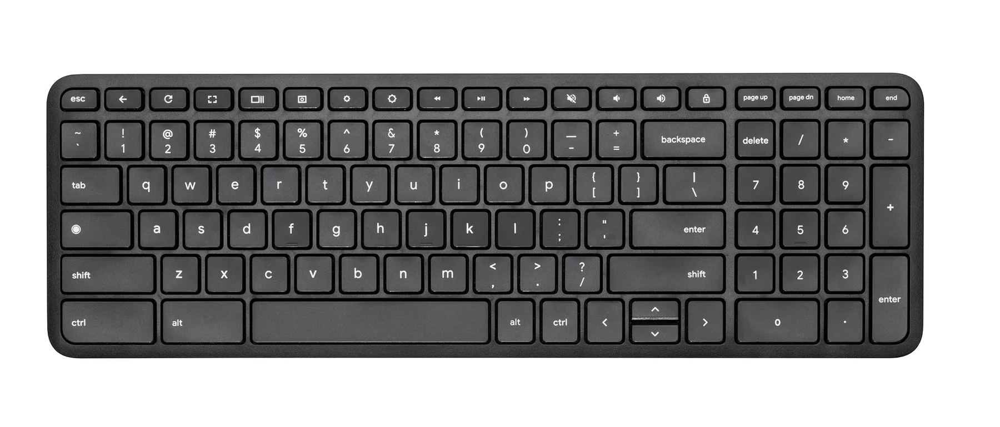
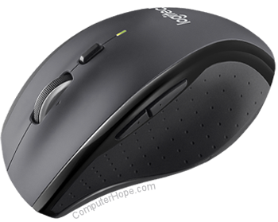

| S.NO |
Parts of computer |
Details |
| 1 |
 |
A computer monitor is an output device that displays information in pictorial or textual form. A discrete monitor comprises a visual display, support electronics, power supply, housing, electrical connectors, and external user controls. |
| 2 |
 |
In addition to letters, numerals, punctuation marks, and symbols, the typing keys also include Shift, Caps Lock, Tab, Enter, the Spacebar, and Backspace |
| 3 |
 |
a small device that a computer user pushes across a desk surface in order to point to a place on a display screen and to select one or more actions to take from that position.
|